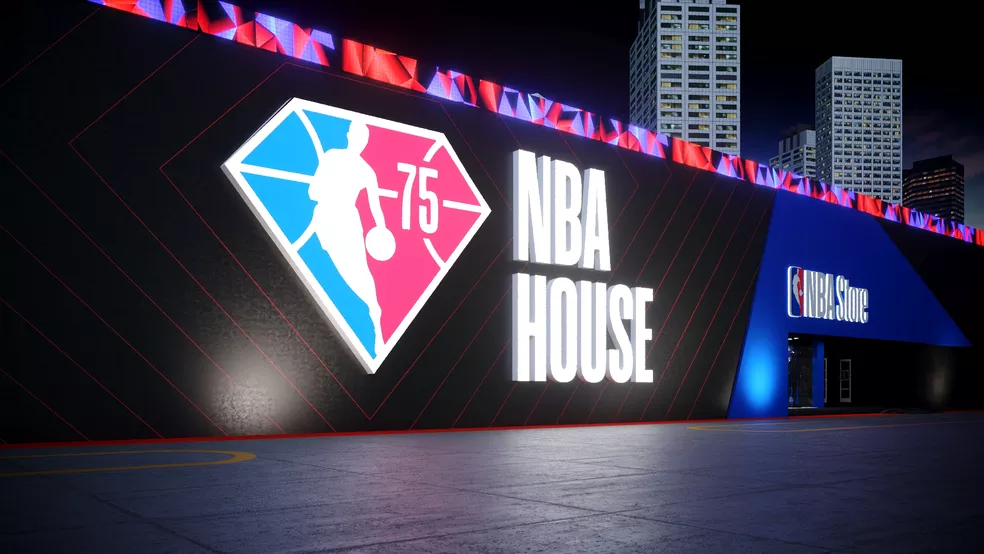

Além de assistir aos jogos decisivos, o fã do basquete poderá ver de perto a Bola de Diamante
Em comemoração dos 75 anos da liga no Brasil, a NBA terá um espaço temático totalmente personalizado para os seus fãs viverem a reta final da competição. Além de poderem assistir às partidas, os torcedores terão a oportunidade de viver experiências únicas como ver de perto a Diamond Ball, a Bola de Diamante, que já foi fotografada ao lado de diversas celebridades nos Estados Unidos.
Essa será a quarta vez que a NBA House ocorre no Brasil. A estreia foi em 2016 durante as Olimpíadas do Rio e, em 2019, teve a presença de mais de 30 mil pessoas em São Paulo. A edição mais recente, em 2021, alcançou, de forma remota, mais de 200 mil fãs espalhados por todo o país. Agora, no retorno ao presencial, a expectativa é que o sucesso seja ainda maior.
Ultimas Curiosidades